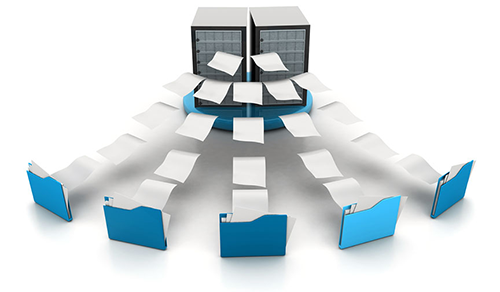

NSquare is a software development services company. Microsoft Dynamics CRM being among our core capabilities, which includes expertise across industry verticals. Our clientele pan across domains like Retail, Healthcare, Travel & Hospitability, Insurance, Human Resource.
- Product Engineering Services
- Integration and Data Migration
- Customer Relationship Management [CRM]
- Enterprise Mobility
-
 Web Design & Developement
Web Design & Developement
- UI/UX Design
Global software market is often marked by shifting dynamics, with consistently increasing cost pressures, need for innovation to create space in the opportunity arcades, as well as meeting the requirements to stay ahead in competition becomes imperative.
At NSquare we understand these challenges; we help overcome most of these hurdles through outsourced product development. This is a proven method to drive businesses and a viable option to gain competitive advantage. Our expertise and delivery model ensures smooth execution, maximum visibility and sound ROI for product companies.
NSquare has a proven track record of serving software vendors for their software development needs. We provide an end to end software development, maintenance and re-engineering services. An adaptive SDLC and Development Methodologies based project execution for fail-safe software development, along with high Visibility, Risk mitigation and immaculate Project Management. Best in practice development methodologies like Agile, SCRUM for planning, management and execution, ensures maximum control, efficiency and delivery.
Software Development
At NSquare, software development is an inherent combination of not only execution but it involves and is driven by conviction for accomplishing client’s over all experience. It is our primary objective to incubate, recommend and provide additional value to our clients.
Our technology skills, development methodology and passion towards every client is a definite success quotient for the projects that we work on.
We have evolved from traditional software development towards newer software development trends. We consider value-add as a very significant ingredient for every requirement, and hence our team acts as an extension to client’s team, sharing the equal zeal towards attainment of additional value along with a successful execution.
NSquare expertise’s throughout different phases of product life cycle. This means NSquare is capable of taking up projects from any of the below stages:
- Requirement Analysis
- Ideation and Conceptualization
- Architecture, R&D, and Prototyping
- Design and Development
- Testing and Assurance
- Training and Product Support
- Maintenance
Planning and Requirement Analysis: This phase helps in acquiring inputs from the client. Based on the requirement a project approach and plan is made, along with feasibility study in the economical, operational, and technical areas.
Defining Requirements: This phase involves defining and documenting the product requirements. This is achieved through capturing software requirement specifications which consists of all the product requirements to be designed and developed during the project life cycle.
Designing and Product Architecture: Software Requirement Specification is a reference for architecting based on the requirements. The relevant stake holder review this based on risk assessment, product robustness, design modularity, budget and timelines. A design approach clearly defines all the architectural modules of the product along with its communication and data flow representation with the external and third party modules (if any).
Product Development: Actual execution wherein the development starts in an organized manner.
- Well-structured programs
- Systematic phasing increasing the quality and productivity
- The Agile methodology decreases the effect of change in requirements
Testing: This is part of all the stages though SDLC. However this stage refers to the testing only stage of the product where products defects are reported, tracked, fixed and retested, until the product reaches the quality standards.
Software Maintenance
Changes, upgrades to software or adaptation of newer technologies and platforms. We definitely know that every aspect of business goes through consistent changes and businesses need to be adaptive to stay along with the market as well as latest technologies. Understandably, there comes a great deal of challenges for managing technology to keep up with the pace.
We have relevant approaches and expertise to solve these maintenance needs. Be it petty fixes or bigger upgrades along with defect repairs. We have robust and proven processes to assess and execute well planned methods to resolve these problems. The knowledge transition helps our team get the client system in our nerve, subsequently allowing us to plan, analyze, estimate impact factors along with transition phases.
Types
- Offshore and onsite maintenance
- Bug fixing and troubleshooting
- Bug tracking and reporting
- Fine tuning the product functionality
- Research, design, updating and implementation of new features
Requisites
- The performance of the software must be maintained (perfective maintenance)
- The errors in specifications, design, and implementation must be corrected
- The final product must also evolve to existence (evolution maintenance)
Software Re-engineering
Every product goes through its life-cycle. These products or systems definitely call for relevant modification, upgrades or re-engineering in due course. Be it migration or moving these systems to new platforms or technology, these needs are inevitable, especially in the technologically vibrant markets that we are in. Alterations, modifications or adherence to newer compliance create problems/hurdles for regular business operations, and at the same time lot many things need to run parallel.
NSquare has the answer for smooth functioning, while adapting to the changes. This is where our software re-engineering capabilities come into play. Our methodologies include data migration, technology migration system and forward engineering. Ensuring maximized cushioning to fallouts or re-engineering impacts.
Types
- Re-architecting
- Migration to new software delivery model (such as Software as Service (SaaS), Platform as Service (Paas), and Delivery over cloud)
- Technology and user interface upgrade
- Data Migration
- Application re-engineering
- Application integration
- Re-documentation
- Platform transitions
Requisites
- Mode of operation
- Business goals for future
- Advantages from process
Data migration can be annoying, but also one of the significant tasks a business must go along with. Regardless of the cost factor, risk or tedium, it's a thing that businesses deal with in certain point in time.
Reasons for data migration can vary, but common causes may include server or storage equipment replacements, maintenance or upgrades, application migration, website consolidation and data center relocation. No matter the reason for having to undergo data migration, businesses need a pain-free data migration strategy to simplify the process.

Organizations leverage numerous systems to keep business running. Typically, services that companies utilize include:
- Client relationship management
- Enterprise resource management
- Human resources
- Human capital management
- Manufacturing resources planning
- Content Management Systems
- Social media applications
- Databases
While these services and applications are highly important to business processes and require not only seamless communication, but also a robust data migration to ensure vital data can be managed.
NSquare has relevant migration and integration capabilities to address these factors owing to transition. We have proven methodologies that lucidify data migration tedium.
We have expertise in delivering immaculate data migration and integration projects. Along with capabilities panning wide range of Databases including Microsoft SQL Server, Oracle, MySQL and Microsoft Access.
NSquare offers a strong ability to implement Microsoft Dynamics CRM solutions including sales and marketing services, integration, platform migration, business process automation, mobile access, enterprise data management, and applications. NSquare also provides application development using a CRM platform specific to vertical or domain.

- Certified resources for MS CRM and pool of experts (consultants and developers)
- 265+ person months of experience along with ongoing CRM projects
- AGILE/SCRUM Execution models
- SCRM Mobile Solutions
- Customization and Configuration, CRM Installation and Development
- Multi-industry and technology experience
- Maintenance and support
- Allied service support like UI Design, Performance testing
- System re-engineering and upgrades
- CTI Integration
- Package implementation
- Global clients encompassing various industries like; Retail, Healthcare, Travel & Hospitability, Insurance, Human Resource
| Nsquare Xperts Microsoft Dynamics Expertise Overview | |||||
|---|---|---|---|---|---|
| Lead and Opportunity Management | Quotes and Proposal Management | Products and Pricing Management | Order and Invoice Management | Competitor Management | Sales Goal Management |
| List Creation | Campaign Management | Campaign Execution | Campaign Response Tracking | Click through Analysis | |
| Case/Incident Management | Queue Management | Activity Execution | Inbound outbound call Management | Knowledge Management | Calendar Management |
| Partner Management | Vendor Management | Broker Management | Supplier Management | Shopping and Ordering | Dealer Management |
| Social Listening | Social Promotion | Social Engagement | Social Analysis | ||
iOS Application Development
Mobile technology was revolutionized when the iOS came into existence. All the applications developed on the iOS platform have always been providing a rich experience to the users and challenging the creativity of developers. Hence we at the NSquare strive to develop best in class ios applications.
We, at NSquare as an iOS developers have proficiency in app development. Our expertise includes creation of marketing applications, business applications, gaming application and entertainment related applications. We have highly talented designers, developers and project leads who understand customer's needs, their experience, technical challenges faced and the iPhone platform norms.
NSquare has forayed into the development of iPhone applications belonging to domains like:
- Real Estate
- Employment
- Lifestyle
- Internet Healthcare
- Education and many more
Services include:
- Customized App development, which helps the client to derive more business from technology.
- Augmented Reality App Development, this integrates the physical and virtual world.
- Mobile Web Development, the effect of the cellular technology on our daily lives.
- Software Support Maintenance, to provide complete and varied varieties of software services.
- Application QA and Testing, this put the ability and grit of our developers, designers and project leads to test to deliver the best.
We have a strong insight to OpenGL ES, Core Graphics, Core Audio, iPhone SDK, Accelerometer, Interface Builder, WebKit Programming, Cocoa Touch, GPS and Objective C.
We associate well with client requirements and perception for application. Our aim is to create robust, scalable yet cost effective Mobile development solutions.
Android Application Development
The Android OS is the most widely used Operating system. It is a Linux based open source system. It is also one of the fastest growing systems for the smart phone devices. Android is highly versatile and flexible. Hence we have a team of experts who diligently work to create technologically and functionally strong android applications. NSquare designs, develops, tests and deploys customized applications for Android platform.
NSquare has been developing Android applications belonging to domains like Real Estate, Employment, Lifestyle, Internet Healthcare, Education and many more.
Domains include:
- Security
- Gaming
- Business
- E-Commerce
- Healthcare
- Finance
- Travel and Map
For app development our key responsibilities include:
- Client IP is of primary importance
- Understanding the basic idea for app development
- Requirement gathering and research and analysis
- Highly efficient developers
- Customer Focused
- Accurate and extremely user friendly applications
- High quality development process
Nsquare’s technology expertise drives an innovative website designing capabilities. Along with creative and robust functionality that forms an integral part in creating websites that speak by themselves.
We understand Prima facie for businesses and its vitalities for growth. Understandably, website is the first impression that speaks a lot about business as well as communicates a strong message. It is imperative that the site should be buoyant as well as assertive. NSquare understands these necessities hence offers premium web design services and solution that suits business needs across industries.
Considerations for our approach
- Smart Website: A website that communicates message clearly.
- Intuitive in Nature: A website that entices and gives better user experience.
- Lucid and Easy to Navigate: A website that is robust and lucid, making Navigation; a cinch through experience.
As we know that a right website development is the window to tap the potential of a business. Existence of a business on the internet expedites the pace of spreading presence of the business on the web.
Technologies:
- PHP
- JSP-Servlet
- Wordpress
- Node.js
- JQuery
- Angular.js
Our user-centered design approach makes sure that every facet of design is taken care and validated with the end users in mind.
User friendly sites across all technological devices have become the need of the hour due to the current technological advances. It is highly crucial to understand the mindset of the users while exploring the website. However the primary need is to create and design website which is user friendly that has superlative involvement of technology. We at NSquare provide user interface design services. These services are specialized in handling multiple mobile applications.
We work along with the clients to create a best user interface design. This includes creation of wireframe prototypes. Our team consists of highly creative and innovative UI designers who work towards achieving best in class visual designs along with usability that in turn lets client meet their business objectives.
Some of the key User Interface Services that we provide are:
- Designing of Prototypes and Wireframes
- Social networking applications
- User friendly interfaces and User experience design
- UI design for mobiles and web that includes themes, widget design, graphic design, application UI and icons.
- Designing and developing multi lingual page for customized, core and high standard websites
We research and analyze end users, which allow us to get a hand-on understanding to the psyche of users and audience. We consider basics to begin with:
- User objective from the site, application, or product
- Main areas, aims and targeted audience.
- Basic feel on interaction and intuitiveness of the interface
- Expectation from the application or product